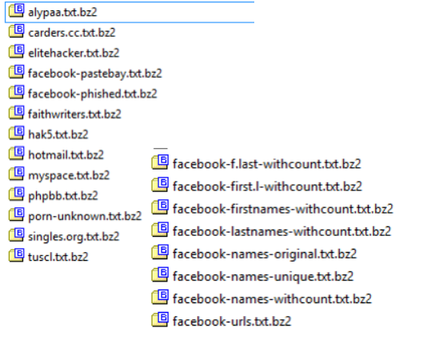
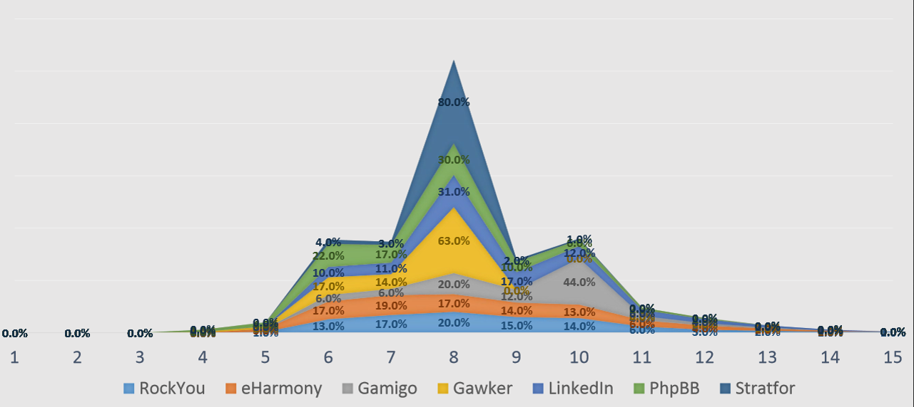
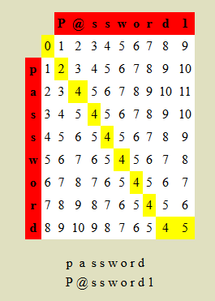

So, What’s in a Password?
Presented by Rob Gillen / @argodev

This work is licensed under a Creative Commons Attribution 4.0 International License.
This talk and related resources are available online: https://github.com/argodev/talks/
Don't be Stupid
The following presentation describes real attacks on real systems. Please note that most of the attacks described would be considered ILLEGAL if attempted on machines that you do not have explicit permission to test and attack. I assume no responsibility for any actions you perform based on the content of this presentation or subsequent conversations.
Please remember this basic guideline: With knowledge comes responsibility.
Disclaimer
The content of this presentation represents my personal views and thoughts at the present time. I reserve the right to change my views and opinions at any time. This content is not endorsed by, or representative in any way of my employer nor is it intended to be a view into my work or a reflection on the type of work that I or my group performs. It is simply a hobby and personal interest and should be considered as such.
Password Attacks
A Year in Review
Pixel Federation
In December 2013, a breach of the web-based game community based in Slovakia exposed over 38,000 accounts which were promptly posted online. The breach included email addresses and unsalted MD5 hashed passwords, many of which were easily converted back to plain text.
Vodafone
In November 2013, Vodafone in Iceland suffered an attack attributed to the Turkish hacker collective "Maxn3y". The data was consequently publicly exposed and included user names, email addresses, social security numbers, SMS message, server logs and passwords from a variety of different internal sources.
Adobe
The big one. In October 2013, 153 million accounts were breached with each containing an internal ID, username, email, encrypted password and a password hint in plain text. The password cryptography was poorly done and many were quickly resolved back to plain text. The unencrypted hints also disclosed much about the passwords adding further to the risk that hundreds of millions of Adobe customers already faced.
February 2013 - This week, we detected unusual access patterns that led to us identifying unauthorized access attempts to Twitter user data. We discovered one live attack and were able to shut it down in process moments later. However, our investigation has thus far indicated that the attackers may have had access to limited user information – usernames, email addresses, session tokens and encrypted/salted versions of passwords – for approximately 250,000 users.
More...
- cvideo.co.il – 10/15/2013 – 3,339
- penangmarathon.gov.my – 10/8/2013 – 1,387
- tomsawyer.com – 10/6/2013 – 57,462
- ahashare.com – 10/3/2013 – 169,874
More...
- Unknown Israeli website – 7/30/2013 – 26,064
- UK emails – 7/17/2013 – 8,002
- UK emails (part 2) – 7/17/2013 – 7,514
- http://www.pakistanintelligence.com – 5/27/2013 – 75,942
More...
- McDonalds Taiwan – 3/27/2013 – 185,620
- karjera.ktu.lt – 3/14/2013 – 14,133
- avadas.de – 3/9/2013 – 3,344
- angloplatinum.co.za – 3/5/2013 – 7,967
More...
- angloplatinum.com – 3/5/2013 – 723
- Walla.co.il – 2/19/2013 – 531,526
- Bank Executives – 2/4/2013 – 4,596
- bee-network.co.za – 1/29/2013 – 81
More...
- omni-id.com – 1/29/2013 – 1,151
- moolmans.com – 1/29/2013 – 117
- servicedesk.ufs.ac.za – 1/29/2013 – 3,952
- servicedesk.ufs.ac.za (part 2) – 1/29/2013 – 355
More...
- westcol.co.za – 1/29/2013 – 99
- digital.postnet.co.za – 1/29/2013 – 45,245
- French Chamber of Commerce – 1/29/2013 – 515
Types of Attacks
- Algorithm Weakness
- Implementation Weaknesses
- Dictionary Attacks
- Brute-Force Attacks
- Mask Attacks
Algorithmic Weaknesses
- Collision, Second Pre-Image, Pre-Image
- Confirmed:
- GOST, HAVAL, MD2, MD4, MD5, PANAMA, RadioGatun, RIPEMD, RIPEMD-160, SHA-0, SHA-1, Tiger(2) – 192/160/128, WHIRLPOOL
- Theoretical:
- SHA-256/224
- SHA-512/384
Account Hashes
- Windows Hash
- EAD0CC57DDAAE50D876B7DD6386FA9C7
- Linux Hash
- $6$OeKR9qBnzym.Q.VO$hM3uL03hmR4Z
qAME/8Ol.xWGYAmVdpi3S4hWGLeugaKN
j/HLzQPTz7FhjATYO/KXCNHZ8P7zJDi2
HHb1K.xfE.
File Encryption
- MS Office
- PDFs
- Zip/7z/rar
- TrueCrypt
How do they work?
- Known file-format/implementation weakness
- Header data to indicate encryption
- Type, keylength, etc.
- Often some small portion to decrypt/validate
- How is it that changing encryption keys is fast?
- Your key encrypts “real” key
Is it really
cracking?
Password Guessing
char string1[maxPassLength + 1];
char alphanum[63] =
"ABCDEFGHIJKLMNOPQRSTUVWXYZ"
"abcdefghijklmnopqrstuvwxyz"
"0123456789";
for 0 --> maxLength
for each char in alphanum…
Slightly Better...
int min = 8;
int max = 12;
char[] valid =
"ABCDEFGHIJKLMNOPQRSTUVWXYZ"
"abcdefghijklmnopqrstuvwxyz"
"0123456789";
// known rules
// first & last must be char
// no consecutive-ordered chars/nums
// no repeated chars/nums
DEMO: Cracking a
Windows Hash
With oclHashCat
(more) Intelligent Password Guessing
- What do people usually use?
- What can we do to reduce the set of possibilities?
- Cull terms/domain knowledge from relevant data
- Dating sites, religious sites, others
Best: Already used/real-world passwords
Determine Your Goals
- Cracking a single, specific pwd?
- Cracking a large % of an “acquired set”?
- Mark Burnett, author of Perfect Passwords
- List of 6,000,000, culled down to 10,000 most frequently used
- Top 10,000 passwords represent by 99.8% of all passwords
More Password Stats...
- Overview
- 4.7% of users have the password password
- 8.5% have the passwords password or 123456
- 9.8% have the passwords password, 123456 or 12345678
- 14% have a password from the top 10 passwords
- 40% have a password from the top 100 passwords
- 79% have a password from the top 500 passwords
- 91% have a password from the top 1000 passwords
- From a uniqueness standpoint...
- 99.6% of the unique passwords are used by only 0.18% of users
Lists....
PACK
- Password Analysis and
Cracking Toolkit - Peter Kacherginsky,
PasswordCon,
7/30-7/31 - Intelligent cycle of
cracking, analysis,
rule generation
Statistical Analysis
- Password Length Analysis
- Character Set Analysis
- Word Mangling Analysis
Example: Length
DEMO: Statistics
on Real PWs
Advanced Analytics
- Levenshtein Edit Distance
Levenshtein Edit Distance
- Minimum number of changes required to
change one string into another - Measure distance b/t actual words and
cracked list to optimize the word
mangling rules - i.e. XX% of words can be achieved
with Levenshtein edit distance of <=2 - Only gen rules that match
What if I don't have your Password?
- Pass the Hash
- But We use SmartCards!?
Avoidance Techniques
- Don’t use "monkey"
- Don’t reuse "monkey"
- If you must use "monkey", require something else as well
- Salt is good
- Your own salt is better
- Utilize memory-hard algorithms
- Utilize multiple iterations (a lot)
- Your username is half of the equation
References
Questions/Contact
Rob Gillen
rob@gillenfamily.net
http://rob.gillenfamily.net
@argodev
This talk and related resources are available online: https://github.com/argodev/talks/